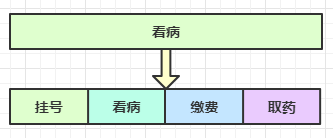
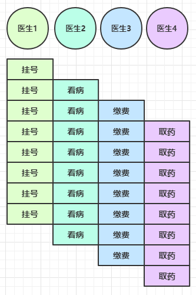

二. Netty 入门
1. 概述
1.1 Netty 是什么？
Netty is an asynchronous event-driven network application framework
for rapid development of maintainable high performance protocol servers & clients.
Netty 是一个异步的、基于事件驱动的网络应用框架，用于快速开发可维护、高性能的网络服务器和客户端
1.2 Netty 的作者

他还是另一个著名网络应用框架 Mina 的重要贡献者
1.3 Netty 的地位
Netty 在 Java 网络应用框架中的地位就好比：Spring 框架在 JavaEE 开发中的地位
以下的框架都使用了 Netty，因为它们有网络通信需求！
- Cassandra - nosql 数据库
- Spark - 大数据分布式计算框架
- Hadoop - 大数据分布式存储框架
- RocketMQ - ali 开源的消息队列
- ElasticSearch - 搜索引擎
- gRPC - rpc 框架
- Dubbo - rpc 框架
- Spring 5.x - flux api 完全抛弃了 tomcat ，使用 netty 作为服务器端
- Zookeeper - 分布式协调框架
1.4 Netty 的优势
- Netty vs NIO，工作量大，bug 多
- 需要自己构建协议
- 解决 TCP 传输问题，如粘包、半包
- epoll 空轮询导致 CPU 100%
- 对 API 进行增强，使之更易用，如 FastThreadLocal => ThreadLocal，ByteBuf => ByteBuffer
- Netty vs 其它网络应用框架
- Mina 由 apache 维护，将来 3.x 版本可能会有较大重构，破坏 API 向下兼容性，Netty 的开发迭代更迅速，API 更简洁、文档更优秀
- 久经考验，16年，Netty 版本
- 2.x 2004
- 3.x 2008
- 4.x 2013
- 5.x 已废弃（没有明显的性能提升，维护成本高）
2. Hello World
2.1 目标
开发一个简单的服务器端和客户端
- 客户端向服务器端发送 hello, world
- 服务器仅接收，不返回
加入依赖
<dependency>
<groupId>io.netty</groupId>
<artifactId>netty-all</artifactId>
<version>4.1.39.Final</version>
</dependency>
2.2 服务器端
new ServerBootstrap()
.group(new NioEventLoopGroup()) // 1
.channel(NioServerSocketChannel.class) // 2
.childHandler(new ChannelInitializer<NioSocketChannel>() { // 3
protected void initChannel(NioSocketChannel ch) {
ch.pipeline().addLast(new StringDecoder()); // 5
ch.pipeline().addLast(new SimpleChannelInboundHandler<String>() { // 6
@Override
protected void channelRead0(ChannelHandlerContext ctx, String msg) {
System.out.println(msg);
}
});
}
})
.bind(8080); // 4
代码解读
1 处，创建 NioEventLoopGroup，可以简单理解为
线程池 + Selector后面会详细展开2 处，选择服务 Scoket 实现类，其中 NioServerSocketChannel 表示基于 NIO 的服务器端实现，其它实现还有

3 处，为啥方法叫 childHandler，是接下来添加的处理器都是给 SocketChannel 用的，而不是给 ServerSocketChannel。ChannelInitializer 处理器（仅执行一次），它的作用是待客户端 SocketChannel 建立连接后，执行 initChannel 以便添加更多的处理器
4 处，ServerSocketChannel 绑定的监听端口
5 处，SocketChannel 的处理器，解码 ByteBuf => String
6 处，SocketChannel 的业务处理器，使用上一个处理器的处理结果
2.3 客户端
new Bootstrap()
.group(new NioEventLoopGroup()) // 1
.channel(NioSocketChannel.class) // 2
.handler(new ChannelInitializer<Channel>() { // 3
@Override
protected void initChannel(Channel ch) {
ch.pipeline().addLast(new StringEncoder()); // 8
}
})
.connect("127.0.0.1", 8080) // 4
.sync() // 5
.channel() // 6
.writeAndFlush(new Date() + ": hello world!"); // 7
代码解读
1 处，创建 NioEventLoopGroup，同 Server
2 处，选择客户 Socket 实现类，NioSocketChannel 表示基于 NIO 的客户端实现，其它实现还有

3 处，添加 SocketChannel 的处理器，ChannelInitializer 处理器（仅执行一次），它的作用是待客户端 SocketChannel 建立连接后，执行 initChannel 以便添加更多的处理器
- 4 处，指定要连接的服务器和端口
- 5 处，Netty 中很多方法都是异步的，如 connect，这时需要使用 sync 方法等待 connect 建立连接完毕
- 6 处，获取 channel 对象，它即为通道抽象，可以进行数据读写操作
- 7 处，写入消息并清空缓冲区
- 8 处，消息会经过通道 handler 处理，这里是将 String => ByteBuf 发出
- 数据经过网络传输，到达服务器端，服务器端 5 和 6 处的 handler 先后被触发，走完一个流程
2.4 流程梳理

💡 提示
一开始需要树立正确的观念
- 把 channel 理解为数据的通道
- 把 msg 理解为流动的数据，最开始输入是 ByteBuf，但经过 pipeline 的加工，会变成其它类型对象，最后输出又变成 ByteBuf
- 把 handler 理解为数据的处理工序
- 工序有多道，合在一起就是 pipeline，pipeline 负责发布事件（读、读取完成...）传播给每个 handler， handler 对自己感兴趣的事件进行处理（重写了相应事件处理方法）
- handler 分 Inbound 和 Outbound 两类
- 把 eventLoop 理解为处理数据的工人
- 工人可以管理多个 channel 的 io 操作，并且一旦工人负责了某个 channel，就要负责到底（绑定）
- 工人既可以执行 io 操作，也可以进行任务处理，每位工人有任务队列，队列里可以堆放多个 channel 的待处理任务，任务分为普通任务、定时任务
- 工人按照 pipeline 顺序，依次按照 handler 的规划（代码）处理数据，可以为每道工序指定不同的工人
3. 组件
3.1 EventLoop
事件循环对象
EventLoop 本质是一个单线程执行器（同时维护了一个 Selector），里面有 run 方法处理 Channel 上源源不断的 io 事件。
它的继承关系比较复杂
- 一条线是继承自 j.u.c.ScheduledExecutorService 因此包含了线程池中所有的方法
- 另一条线是继承自 netty 自己的 OrderedEventExecutor，
- 提供了 boolean inEventLoop(Thread thread) 方法判断一个线程是否属于此 EventLoop
- 提供了 parent 方法来看看自己属于哪个 EventLoopGroup
事件循环组
EventLoopGroup 是一组 EventLoop，Channel 一般会调用 EventLoopGroup 的 register 方法来绑定其中一个 EventLoop，后续这个 Channel 上的 io 事件都由此 EventLoop 来处理（保证了 io 事件处理时的线程安全）
- 继承自 netty 自己的 EventExecutorGroup
- 实现了 Iterable 接口提供遍历 EventLoop 的能力
- 另有 next 方法获取集合中下一个 EventLoop
以一个简单的实现为例：
// 内部创建了两个 EventLoop, 每个 EventLoop 维护一个线程
DefaultEventLoopGroup group = new DefaultEventLoopGroup(2);
System.out.println(group.next());
System.out.println(group.next());
System.out.println(group.next());
输出
io.netty.channel.DefaultEventLoop@60f82f98
io.netty.channel.DefaultEventLoop@35f983a6
io.netty.channel.DefaultEventLoop@60f82f98
也可以使用 for 循环
DefaultEventLoopGroup group = new DefaultEventLoopGroup(2);
for (EventExecutor eventLoop : group) {
System.out.println(eventLoop);
}
输出
io.netty.channel.DefaultEventLoop@60f82f98
io.netty.channel.DefaultEventLoop@35f983a6
💡 优雅关闭
优雅关闭 shutdownGracefully 方法。该方法会首先切换 EventLoopGroup 到关闭状态从而拒绝新的任务的加入，然后在任务队列的任务都处理完成后，停止线程的运行。从而确保整体应用是在正常有序的状态下退出的
演示 NioEventLoop 处理 io 事件
服务器端两个 nio worker 工人
new ServerBootstrap()
.group(new NioEventLoopGroup(1), new NioEventLoopGroup(2))
.channel(NioServerSocketChannel.class)
.childHandler(new ChannelInitializer<NioSocketChannel>() {
@Override
protected void initChannel(NioSocketChannel ch) {
ch.pipeline().addLast(new ChannelInboundHandlerAdapter() {
@Override
public void channelRead(ChannelHandlerContext ctx, Object msg) {
ByteBuf byteBuf = msg instanceof ByteBuf ? ((ByteBuf) msg) : null;
if (byteBuf != null) {
byte[] buf = new byte[16];
ByteBuf len = byteBuf.readBytes(buf, 0, byteBuf.readableBytes());
log.debug(new String(buf));
}
}
});
}
}).bind(8080).sync();
客户端，启动三次，分别修改发送字符串为 zhangsan（第一次），lisi（第二次），wangwu（第三次）
public static void main(String[] args) throws InterruptedException {
Channel channel = new Bootstrap()
.group(new NioEventLoopGroup(1))
.handler(new ChannelInitializer<NioSocketChannel>() {
@Override
protected void initChannel(NioSocketChannel ch) throws Exception {
System.out.println("init...");
ch.pipeline().addLast(new LoggingHandler(LogLevel.DEBUG));
}
})
.channel(NioSocketChannel.class).connect("localhost", 8080)
.sync()
.channel();
channel.writeAndFlush(ByteBufAllocator.DEFAULT.buffer().writeBytes("wangwu".getBytes()));
Thread.sleep(2000);
channel.writeAndFlush(ByteBufAllocator.DEFAULT.buffer().writeBytes("wangwu".getBytes()));
最后输出
22:03:34 [DEBUG] [nioEventLoopGroup-3-1] c.i.o.EventLoopTest - zhangsan
22:03:36 [DEBUG] [nioEventLoopGroup-3-1] c.i.o.EventLoopTest - zhangsan
22:05:36 [DEBUG] [nioEventLoopGroup-3-2] c.i.o.EventLoopTest - lisi
22:05:38 [DEBUG] [nioEventLoopGroup-3-2] c.i.o.EventLoopTest - lisi
22:06:09 [DEBUG] [nioEventLoopGroup-3-1] c.i.o.EventLoopTest - wangwu
22:06:11 [DEBUG] [nioEventLoopGroup-3-1] c.i.o.EventLoopTest - wangwu
可以看到两个工人轮流处理 channel，但工人与 channel 之间进行了绑定

再增加两个非 nio 工人
DefaultEventLoopGroup normalWorkers = new DefaultEventLoopGroup(2);
new ServerBootstrap()
.group(new NioEventLoopGroup(1), new NioEventLoopGroup(2))
.channel(NioServerSocketChannel.class)
.childHandler(new ChannelInitializer<NioSocketChannel>() {
@Override
protected void initChannel(NioSocketChannel ch) {
ch.pipeline().addLast(new LoggingHandler(LogLevel.DEBUG));
ch.pipeline().addLast(normalWorkers,"myhandler",
new ChannelInboundHandlerAdapter() {
@Override
public void channelRead(ChannelHandlerContext ctx, Object msg) {
ByteBuf byteBuf = msg instanceof ByteBuf ? ((ByteBuf) msg) : null;
if (byteBuf != null) {
byte[] buf = new byte[16];
ByteBuf len = byteBuf.readBytes(buf, 0, byteBuf.readableBytes());
log.debug(new String(buf));
}
}
});
}
}).bind(8080).sync();
客户端代码不变，启动三次，分别修改发送字符串为 zhangsan（第一次），lisi（第二次），wangwu（第三次）
输出
22:19:48 [DEBUG] [nioEventLoopGroup-4-1] i.n.h.l.LoggingHandler - [id: 0x251562d5, L:/127.0.0.1:8080 - R:/127.0.0.1:52588] REGISTERED
22:19:48 [DEBUG] [nioEventLoopGroup-4-1] i.n.h.l.LoggingHandler - [id: 0x251562d5, L:/127.0.0.1:8080 - R:/127.0.0.1:52588] ACTIVE
22:19:48 [DEBUG] [nioEventLoopGroup-4-1] i.n.h.l.LoggingHandler - [id: 0x251562d5, L:/127.0.0.1:8080 - R:/127.0.0.1:52588] READ: 8B
+-------------------------------------------------+
| 0 1 2 3 4 5 6 7 8 9 a b c d e f |
+--------+-------------------------------------------------+----------------+
|00000000| 7a 68 61 6e 67 73 61 6e |zhangsan |
+--------+-------------------------------------------------+----------------+
22:19:48 [DEBUG] [nioEventLoopGroup-4-1] i.n.h.l.LoggingHandler - [id: 0x251562d5, L:/127.0.0.1:8080 - R:/127.0.0.1:52588] READ COMPLETE
22:19:48 [DEBUG] [defaultEventLoopGroup-2-1] c.i.o.EventLoopTest - zhangsan
22:19:50 [DEBUG] [nioEventLoopGroup-4-1] i.n.h.l.LoggingHandler - [id: 0x251562d5, L:/127.0.0.1:8080 - R:/127.0.0.1:52588] READ: 8B
+-------------------------------------------------+
| 0 1 2 3 4 5 6 7 8 9 a b c d e f |
+--------+-------------------------------------------------+----------------+
|00000000| 7a 68 61 6e 67 73 61 6e |zhangsan |
+--------+-------------------------------------------------+----------------+
22:19:50 [DEBUG] [nioEventLoopGroup-4-1] i.n.h.l.LoggingHandler - [id: 0x251562d5, L:/127.0.0.1:8080 - R:/127.0.0.1:52588] READ COMPLETE
22:19:50 [DEBUG] [defaultEventLoopGroup-2-1] c.i.o.EventLoopTest - zhangsan
22:20:24 [DEBUG] [nioEventLoopGroup-4-2] i.n.h.l.LoggingHandler - [id: 0x94b2a840, L:/127.0.0.1:8080 - R:/127.0.0.1:52612] REGISTERED
22:20:24 [DEBUG] [nioEventLoopGroup-4-2] i.n.h.l.LoggingHandler - [id: 0x94b2a840, L:/127.0.0.1:8080 - R:/127.0.0.1:52612] ACTIVE
22:20:25 [DEBUG] [nioEventLoopGroup-4-2] i.n.h.l.LoggingHandler - [id: 0x94b2a840, L:/127.0.0.1:8080 - R:/127.0.0.1:52612] READ: 4B
+-------------------------------------------------+
| 0 1 2 3 4 5 6 7 8 9 a b c d e f |
+--------+-------------------------------------------------+----------------+
|00000000| 6c 69 73 69 |lisi |
+--------+-------------------------------------------------+----------------+
22:20:25 [DEBUG] [nioEventLoopGroup-4-2] i.n.h.l.LoggingHandler - [id: 0x94b2a840, L:/127.0.0.1:8080 - R:/127.0.0.1:52612] READ COMPLETE
22:20:25 [DEBUG] [defaultEventLoopGroup-2-2] c.i.o.EventLoopTest - lisi
22:20:27 [DEBUG] [nioEventLoopGroup-4-2] i.n.h.l.LoggingHandler - [id: 0x94b2a840, L:/127.0.0.1:8080 - R:/127.0.0.1:52612] READ: 4B
+-------------------------------------------------+
| 0 1 2 3 4 5 6 7 8 9 a b c d e f |
+--------+-------------------------------------------------+----------------+
|00000000| 6c 69 73 69 |lisi |
+--------+-------------------------------------------------+----------------+
22:20:27 [DEBUG] [nioEventLoopGroup-4-2] i.n.h.l.LoggingHandler - [id: 0x94b2a840, L:/127.0.0.1:8080 - R:/127.0.0.1:52612] READ COMPLETE
22:20:27 [DEBUG] [defaultEventLoopGroup-2-2] c.i.o.EventLoopTest - lisi
22:20:38 [DEBUG] [nioEventLoopGroup-4-1] i.n.h.l.LoggingHandler - [id: 0x79a26af9, L:/127.0.0.1:8080 - R:/127.0.0.1:52625] REGISTERED
22:20:38 [DEBUG] [nioEventLoopGroup-4-1] i.n.h.l.LoggingHandler - [id: 0x79a26af9, L:/127.0.0.1:8080 - R:/127.0.0.1:52625] ACTIVE
22:20:38 [DEBUG] [nioEventLoopGroup-4-1] i.n.h.l.LoggingHandler - [id: 0x79a26af9, L:/127.0.0.1:8080 - R:/127.0.0.1:52625] READ: 6B
+-------------------------------------------------+
| 0 1 2 3 4 5 6 7 8 9 a b c d e f |
+--------+-------------------------------------------------+----------------+
|00000000| 77 61 6e 67 77 75 |wangwu |
+--------+-------------------------------------------------+----------------+
22:20:38 [DEBUG] [nioEventLoopGroup-4-1] i.n.h.l.LoggingHandler - [id: 0x79a26af9, L:/127.0.0.1:8080 - R:/127.0.0.1:52625] READ COMPLETE
22:20:38 [DEBUG] [defaultEventLoopGroup-2-1] c.i.o.EventLoopTest - wangwu
22:20:40 [DEBUG] [nioEventLoopGroup-4-1] i.n.h.l.LoggingHandler - [id: 0x79a26af9, L:/127.0.0.1:8080 - R:/127.0.0.1:52625] READ: 6B
+-------------------------------------------------+
| 0 1 2 3 4 5 6 7 8 9 a b c d e f |
+--------+-------------------------------------------------+----------------+
|00000000| 77 61 6e 67 77 75 |wangwu |
+--------+-------------------------------------------------+----------------+
22:20:40 [DEBUG] [nioEventLoopGroup-4-1] i.n.h.l.LoggingHandler - [id: 0x79a26af9, L:/127.0.0.1:8080 - R:/127.0.0.1:52625] READ COMPLETE
22:20:40 [DEBUG] [defaultEventLoopGroup-2-1] c.i.o.EventLoopTest - wangwu
可以看到，nio 工人和 非 nio 工人也分别绑定了 channel（LoggingHandler 由 nio 工人执行，而我们自己的 handler 由非 nio 工人执行）

💡 handler 执行中如何换人？
关键代码 io.netty.channel.AbstractChannelHandlerContext#invokeChannelRead()
static void invokeChannelRead(final AbstractChannelHandlerContext next, Object msg) {
final Object m = next.pipeline.touch(ObjectUtil.checkNotNull(msg, "msg"), next);
// 下一个 handler 的事件循环是否与当前的事件循环是同一个线程
EventExecutor executor = next.executor();
// 是，直接调用
if (executor.inEventLoop()) {
next.invokeChannelRead(m);
}
// 不是，将要执行的代码作为任务提交给下一个事件循环处理（换人）
else {
executor.execute(new Runnable() {
@Override
public void run() {
next.invokeChannelRead(m);
}
});
}
}
- 如果两个 handler 绑定的是同一个线程，那么就直接调用
- 否则，把要调用的代码封装为一个任务对象，由下一个 handler 的线程来调用
演示 NioEventLoop 处理普通任务
NioEventLoop 除了可以处理 io 事件，同样可以向它提交普通任务
NioEventLoopGroup nioWorkers = new NioEventLoopGroup(2);
log.debug("server start...");
Thread.sleep(2000);
nioWorkers.execute(()->{
log.debug("normal task...");
});
输出
22:30:36 [DEBUG] [main] c.i.o.EventLoopTest2 - server start...
22:30:38 [DEBUG] [nioEventLoopGroup-2-1] c.i.o.EventLoopTest2 - normal task...
可以用来执行耗时较长的任务
演示 NioEventLoop 处理定时任务
NioEventLoopGroup nioWorkers = new NioEventLoopGroup(2);
log.debug("server start...");
Thread.sleep(2000);
nioWorkers.scheduleAtFixedRate(() -> {
log.debug("running...");
}, 0, 1, TimeUnit.SECONDS);
输出
22:35:15 [DEBUG] [main] c.i.o.EventLoopTest2 - server start...
22:35:17 [DEBUG] [nioEventLoopGroup-2-1] c.i.o.EventLoopTest2 - running...
22:35:18 [DEBUG] [nioEventLoopGroup-2-1] c.i.o.EventLoopTest2 - running...
22:35:19 [DEBUG] [nioEventLoopGroup-2-1] c.i.o.EventLoopTest2 - running...
22:35:20 [DEBUG] [nioEventLoopGroup-2-1] c.i.o.EventLoopTest2 - running...
...
可以用来执行定时任务
3.2 Channel
channel 的主要作用
- close() 可以用来关闭 channel
- closeFuture() 用来处理 channel 的关闭
- sync 方法作用是同步等待 channel 关闭
- 而 addListener 方法是异步等待 channel 关闭
- pipeline() 方法添加处理器
- write() 方法将数据写入
- writeAndFlush() 方法将数据写入并刷出
ChannelFuture
这时刚才的客户端代码
new Bootstrap()
.group(new NioEventLoopGroup())
.channel(NioSocketChannel.class)
.handler(new ChannelInitializer<Channel>() {
@Override
protected void initChannel(Channel ch) {
ch.pipeline().addLast(new StringEncoder());
}
})
.connect("127.0.0.1", 8080)
.sync()
.channel()
.writeAndFlush(new Date() + ": hello world!");
现在把它拆开来看
ChannelFuture channelFuture = new Bootstrap()
.group(new NioEventLoopGroup())
.channel(NioSocketChannel.class)
.handler(new ChannelInitializer<Channel>() {
@Override
protected void initChannel(Channel ch) {
ch.pipeline().addLast(new StringEncoder());
}
})
.connect("127.0.0.1", 8080); // 1
channelFuture.sync().channel().writeAndFlush(new Date() + ": hello world!");
- 1 处返回的是 ChannelFuture 对象，它的作用是利用 channel() 方法来获取 Channel 对象
注意 connect 方法是异步的，意味着不等连接建立，方法执行就返回了。因此 channelFuture 对象中不能【立刻】获得到正确的 Channel 对象
实验如下：
ChannelFuture channelFuture = new Bootstrap()
.group(new NioEventLoopGroup())
.channel(NioSocketChannel.class)
.handler(new ChannelInitializer<Channel>() {
@Override
protected void initChannel(Channel ch) {
ch.pipeline().addLast(new StringEncoder());
}
})
.connect("127.0.0.1", 8080);
System.out.println(channelFuture.channel()); // 1
channelFuture.sync(); // 2
System.out.println(channelFuture.channel()); // 3
- 执行到 1 时，连接未建立，打印
[id: 0x2e1884dd] - 执行到 2 时，sync 方法是同步等待连接建立完成
- 执行到 3 时，连接肯定建立了，打印
[id: 0x2e1884dd, L:/127.0.0.1:57191 - R:/127.0.0.1:8080]
除了用 sync 方法可以让异步操作同步以外，还可以使用回调的方式：
ChannelFuture channelFuture = new Bootstrap()
.group(new NioEventLoopGroup())
.channel(NioSocketChannel.class)
.handler(new ChannelInitializer<Channel>() {
@Override
protected void initChannel(Channel ch) {
ch.pipeline().addLast(new StringEncoder());
}
})
.connect("127.0.0.1", 8080);
System.out.println(channelFuture.channel()); // 1
channelFuture.addListener((ChannelFutureListener) future -> {
System.out.println(future.channel()); // 2
});
- 执行到 1 时，连接未建立，打印
[id: 0x749124ba] - ChannelFutureListener 会在连接建立时被调用（其中 operationComplete 方法），因此执行到 2 时，连接肯定建立了，打印
[id: 0x749124ba, L:/127.0.0.1:57351 - R:/127.0.0.1:8080]
CloseFuture
@Slf4j
public class CloseFutureClient {
public static void main(String[] args) throws InterruptedException {
NioEventLoopGroup group new NioEventLoopGroup();
ChannelFuture channelFuture = new Bootstrap()
.group(group)
.channel(NioSocketChannel.class)
.handler(new ChannelInitializer<NioSocketChannel>() {
@Override // 在连接建立后被调用
protected void initChannel(NioSocketChannel ch) throws Exception {
ch.pipeline().addLast(new LoggingHandler(LogLevel.DEBUG));
ch.pipeline().addLast(new StringEncoder());
}
})
.connect(new InetSocketAddress("localhost", 8080));
Channel channel = channelFuture.sync().channel();
log.debug("{}", channel);
new Thread(()->{
Scanner scanner = new Scanner(System.in);
while (true) {
String line = scanner.nextLine();
if ("q".equals(line)) {
channel.close(); // close 异步操作 1s 之后
// log.debug("处理关闭之后的操作"); // 不能在这里善后
break;
}
channel.writeAndFlush(line);
}
}, "input").start();
// 获取 CloseFuture 对象， 1) 同步处理关闭， 2) 异步处理关闭
ChannelFuture closeFuture = channel.closeFuture();
/*log.debug("waiting close...");
closeFuture.sync();
log.debug("处理关闭之后的操作");*/
closeFuture.addListener(new ChannelFutureListener() {
@Override
public void operationComplete(ChannelFuture future) throws Exception {
log.debug("处理关闭之后的操作");
group.shutdownGracefully();
}
});
}
}
💡 异步提升的是什么
有些同学看到这里会有疑问：为什么不在一个线程中去执行建立连接、去执行关闭 channel，那样不是也可以吗？非要用这么复杂的异步方式：比如一个线程发起建立连接，另一个线程去真正建立连接
还有同学会笼统地回答，因为 netty 异步方式用了多线程、多线程就效率高。其实这些认识都比较片面，多线程和异步所提升的效率并不是所认为的
思考下面的场景，4 个医生给人看病，每个病人花费 20 分钟，而且医生看病的过程中是以病人为单位的，一个病人看完了，才能看下一个病人。假设病人源源不断地来，可以计算一下 4 个医生一天工作 8 小时，处理的病人总数是：4 * 8 * 3 = 96

经研究发现，看病可以细分为四个步骤，经拆分后每个步骤需要 5 分钟，如下

因此可以做如下优化，只有一开始，医生 2、3、4 分别要等待 5、10、15 分钟才能执行工作，但只要后续病人源源不断地来，他们就能够满负荷工作，并且处理病人的能力提高到了 4 * 8 * 12 效率几乎是原来的四倍

要点
- 单线程没法异步提高效率，必须配合多线程、多核 cpu 才能发挥异步的优势
- 异步并没有缩短响应时间，反而有所增加
- 合理进行任务拆分，也是利用异步的关键
3.3 Future & Promise
在异步处理时，经常用到这两个接口
首先要说明 netty 中的 Future 与 jdk 中的 Future 同名，但是是两个接口，netty 的 Future 继承自 jdk 的 Future，而 Promise 又对 netty Future 进行了扩展
- jdk Future 只能同步等待任务结束（或成功、或失败）才能得到结果
- netty Future 可以同步等待任务结束得到结果，也可以异步方式得到结果，但都是要等任务结束
- netty Promise 不仅有 netty Future 的功能，而且脱离了任务独立存在，只作为两个线程间传递结果的容器
| 功能/名称 | jdk Future | netty Future | Promise |
|---|---|---|---|
| cancel | 取消任务 | - | - |
| isCanceled | 任务是否取消 | - | - |
| isDone | 任务是否完成，不能区分成功失败 | - | - |
| get | 获取任务结果，阻塞等待 | - | - |
| getNow | - | 获取任务结果，非阻塞，还未产生结果时返回 null | - |
| await | - | 等待任务结束，如果任务失败，不会抛异常，而是通过 isSuccess 判断 | - |
| sync | - | 等待任务结束，如果任务失败，抛出异常 | - |
| isSuccess | - | 判断任务是否成功 | - |
| cause | - | 获取失败信息，非阻塞，如果没有失败，返回null | - |
| addLinstener | - | 添加回调，异步接收结果 | - |
| setSuccess | - | - | 设置成功结果 |
| setFailure | - | - | 设置失败结果 |
例1
同步处理任务成功
DefaultEventLoop eventExecutors = new DefaultEventLoop();
DefaultPromise<Integer> promise = new DefaultPromise<>(eventExecutors);
eventExecutors.execute(()->{
try {
Thread.sleep(1000);
} catch (InterruptedException e) {
e.printStackTrace();
}
log.debug("set success, {}",10);
promise.setSuccess(10);
});
log.debug("start...");
log.debug("{}",promise.getNow()); // 还没有结果
log.debug("{}",promise.get());
输出
11:51:53 [DEBUG] [main] c.i.o.DefaultPromiseTest2 - start...
11:51:53 [DEBUG] [main] c.i.o.DefaultPromiseTest2 - null
11:51:54 [DEBUG] [defaultEventLoop-1-1] c.i.o.DefaultPromiseTest2 - set success, 10
11:51:54 [DEBUG] [main] c.i.o.DefaultPromiseTest2 - 10
例2
异步处理任务成功
DefaultEventLoop eventExecutors = new DefaultEventLoop();
DefaultPromise<Integer> promise = new DefaultPromise<>(eventExecutors);
// 设置回调，异步接收结果
promise.addListener(future -> {
// 这里的 future 就是上面的 promise
log.debug("{}",future.getNow());
});
// 等待 1000 后设置成功结果
eventExecutors.execute(()->{
try {
Thread.sleep(1000);
} catch (InterruptedException e) {
e.printStackTrace();
}
log.debug("set success, {}",10);
promise.setSuccess(10);
});
log.debug("start...");
输出
11:49:30 [DEBUG] [main] c.i.o.DefaultPromiseTest2 - start...
11:49:31 [DEBUG] [defaultEventLoop-1-1] c.i.o.DefaultPromiseTest2 - set success, 10
11:49:31 [DEBUG] [defaultEventLoop-1-1] c.i.o.DefaultPromiseTest2 - 10
例3
同步处理任务失败 - sync & get
DefaultEventLoop eventExecutors = new DefaultEventLoop();
DefaultPromise<Integer> promise = new DefaultPromise<>(eventExecutors);
eventExecutors.execute(() -> {
try {
Thread.sleep(1000);
} catch (InterruptedException e) {
e.printStackTrace();
}
RuntimeException e = new RuntimeException("error...");
log.debug("set failure, {}", e.toString());
promise.setFailure(e);
});
log.debug("start...");
log.debug("{}", promise.getNow());
promise.get(); // sync() 也会出现异常，只是 get 会再用 ExecutionException 包一层异常
输出
12:11:07 [DEBUG] [main] c.i.o.DefaultPromiseTest2 - start...
12:11:07 [DEBUG] [main] c.i.o.DefaultPromiseTest2 - null
12:11:08 [DEBUG] [defaultEventLoop-1-1] c.i.o.DefaultPromiseTest2 - set failure, java.lang.RuntimeException: error...
Exception in thread "main" java.util.concurrent.ExecutionException: java.lang.RuntimeException: error...
at io.netty.util.concurrent.AbstractFuture.get(AbstractFuture.java:41)
at com.itcast.oio.DefaultPromiseTest2.main(DefaultPromiseTest2.java:34)
Caused by: java.lang.RuntimeException: error...
at com.itcast.oio.DefaultPromiseTest2.lambda$main$0(DefaultPromiseTest2.java:27)
at io.netty.channel.DefaultEventLoop.run(DefaultEventLoop.java:54)
at io.netty.util.concurrent.SingleThreadEventExecutor$5.run(SingleThreadEventExecutor.java:918)
at io.netty.util.internal.ThreadExecutorMap$2.run(ThreadExecutorMap.java:74)
at io.netty.util.concurrent.FastThreadLocalRunnable.run(FastThreadLocalRunnable.java:30)
at java.lang.Thread.run(Thread.java:745)
例4
同步处理任务失败 - await
DefaultEventLoop eventExecutors = new DefaultEventLoop();
DefaultPromise<Integer> promise = new DefaultPromise<>(eventExecutors);
eventExecutors.execute(() -> {
try {
Thread.sleep(1000);
} catch (InterruptedException e) {
e.printStackTrace();
}
RuntimeException e = new RuntimeException("error...");
log.debug("set failure, {}", e.toString());
promise.setFailure(e);
});
log.debug("start...");
log.debug("{}", promise.getNow());
promise.await(); // 与 sync 和 get 区别在于，不会抛异常
log.debug("result {}", (promise.isSuccess() ? promise.getNow() : promise.cause()).toString());
输出
12:18:53 [DEBUG] [main] c.i.o.DefaultPromiseTest2 - start...
12:18:53 [DEBUG] [main] c.i.o.DefaultPromiseTest2 - null
12:18:54 [DEBUG] [defaultEventLoop-1-1] c.i.o.DefaultPromiseTest2 - set failure, java.lang.RuntimeException: error...
12:18:54 [DEBUG] [main] c.i.o.DefaultPromiseTest2 - result java.lang.RuntimeException: error...
例5
异步处理任务失败
DefaultEventLoop eventExecutors = new DefaultEventLoop();
DefaultPromise<Integer> promise = new DefaultPromise<>(eventExecutors);
promise.addListener(future -> {
log.debug("result {}", (promise.isSuccess() ? promise.getNow() : promise.cause()).toString());
});
eventExecutors.execute(() -> {
try {
Thread.sleep(1000);
} catch (InterruptedException e) {
e.printStackTrace();
}
RuntimeException e = new RuntimeException("error...");
log.debug("set failure, {}", e.toString());
promise.setFailure(e);
});
log.debug("start...");
输出
12:04:57 [DEBUG] [main] c.i.o.DefaultPromiseTest2 - start...
12:04:58 [DEBUG] [defaultEventLoop-1-1] c.i.o.DefaultPromiseTest2 - set failure, java.lang.RuntimeException: error...
12:04:58 [DEBUG] [defaultEventLoop-1-1] c.i.o.DefaultPromiseTest2 - result java.lang.RuntimeException: error...
例6
await 死锁检查
DefaultEventLoop eventExecutors = new DefaultEventLoop();
DefaultPromise<Integer> promise = new DefaultPromise<>(eventExecutors);
eventExecutors.submit(()->{
System.out.println("1");
try {
promise.await();
// 注意不能仅捕获 InterruptedException 异常
// 否则 死锁检查抛出的 BlockingOperationException 会继续向上传播
// 而提交的任务会被包装为 PromiseTask，它的 run 方法中会 catch 所有异常然后设置为 Promise 的失败结果而不会抛出
} catch (Exception e) {
e.printStackTrace();
}
System.out.println("2");
});
eventExecutors.submit(()->{
System.out.println("3");
try {
promise.await();
} catch (Exception e) {
e.printStackTrace();
}
System.out.println("4");
});
输出
1
2
3
4
io.netty.util.concurrent.BlockingOperationException: DefaultPromise@47499c2a(incomplete)
at io.netty.util.concurrent.DefaultPromise.checkDeadLock(DefaultPromise.java:384)
at io.netty.util.concurrent.DefaultPromise.await(DefaultPromise.java:212)
at com.itcast.oio.DefaultPromiseTest.lambda$main$0(DefaultPromiseTest.java:27)
at io.netty.util.concurrent.PromiseTask$RunnableAdapter.call(PromiseTask.java:38)
at io.netty.util.concurrent.PromiseTask.run(PromiseTask.java:73)
at io.netty.channel.DefaultEventLoop.run(DefaultEventLoop.java:54)
at io.netty.util.concurrent.SingleThreadEventExecutor$5.run(SingleThreadEventExecutor.java:918)
at io.netty.util.internal.ThreadExecutorMap$2.run(ThreadExecutorMap.java:74)
at io.netty.util.concurrent.FastThreadLocalRunnable.run(FastThreadLocalRunnable.java:30)
at java.lang.Thread.run(Thread.java:745)
io.netty.util.concurrent.BlockingOperationException: DefaultPromise@47499c2a(incomplete)
at io.netty.util.concurrent.DefaultPromise.checkDeadLock(DefaultPromise.java:384)
at io.netty.util.concurrent.DefaultPromise.await(DefaultPromise.java:212)
at com.itcast.oio.DefaultPromiseTest.lambda$main$1(DefaultPromiseTest.java:36)
at io.netty.util.concurrent.PromiseTask$RunnableAdapter.call(PromiseTask.java:38)
at io.netty.util.concurrent.PromiseTask.run(PromiseTask.java:73)
at io.netty.channel.DefaultEventLoop.run(DefaultEventLoop.java:54)
at io.netty.util.concurrent.SingleThreadEventExecutor$5.run(SingleThreadEventExecutor.java:918)
at io.netty.util.internal.ThreadExecutorMap$2.run(ThreadExecutorMap.java:74)
at io.netty.util.concurrent.FastThreadLocalRunnable.run(FastThreadLocalRunnable.java:30)
at java.lang.Thread.run(Thread.java:745)
3.4 Handler & Pipeline
ChannelHandler 用来处理 Channel 上的各种事件，分为入站、出站两种。所有 ChannelHandler 被连成一串，就是 Pipeline
- 入站处理器通常是 ChannelInboundHandlerAdapter 的子类，主要用来读取客户端数据，写回结果
- 出站处理器通常是 ChannelOutboundHandlerAdapter 的子类，主要对写回结果进行加工
打个比喻，每个 Channel 是一个产品的加工车间，Pipeline 是车间中的流水线，ChannelHandler 就是流水线上的各道工序，而后面要讲的 ByteBuf 是原材料，经过很多工序的加工：先经过一道道入站工序，再经过一道道出站工序最终变成产品
先搞清楚顺序，服务端
new ServerBootstrap()
.group(new NioEventLoopGroup())
.channel(NioServerSocketChannel.class)
.childHandler(new ChannelInitializer<NioSocketChannel>() {
protected void initChannel(NioSocketChannel ch) {
ch.pipeline().addLast(new ChannelInboundHandlerAdapter(){
@Override
public void channelRead(ChannelHandlerContext ctx, Object msg) {
System.out.println(1);
ctx.fireChannelRead(msg); // 1
}
});
ch.pipeline().addLast(new ChannelInboundHandlerAdapter(){
@Override
public void channelRead(ChannelHandlerContext ctx, Object msg) {
System.out.println(2);
ctx.fireChannelRead(msg); // 2
}
});
ch.pipeline().addLast(new ChannelInboundHandlerAdapter(){
@Override
public void channelRead(ChannelHandlerContext ctx, Object msg) {
System.out.println(3);
ctx.channel().write(msg); // 3
}
});
ch.pipeline().addLast(new ChannelOutboundHandlerAdapter(){
@Override
public void write(ChannelHandlerContext ctx, Object msg,
ChannelPromise promise) {
System.out.println(4);
ctx.write(msg, promise); // 4
}
});
ch.pipeline().addLast(new ChannelOutboundHandlerAdapter(){
@Override
public void write(ChannelHandlerContext ctx, Object msg,
ChannelPromise promise) {
System.out.println(5);
ctx.write(msg, promise); // 5
}
});
ch.pipeline().addLast(new ChannelOutboundHandlerAdapter(){
@Override
public void write(ChannelHandlerContext ctx, Object msg,
ChannelPromise promise) {
System.out.println(6);
ctx.write(msg, promise); // 6
}
});
}
})
.bind(8080);
客户端
new Bootstrap()
.group(new NioEventLoopGroup())
.channel(NioSocketChannel.class)
.handler(new ChannelInitializer<Channel>() {
@Override
protected void initChannel(Channel ch) {
ch.pipeline().addLast(new StringEncoder());
}
})
.connect("127.0.0.1", 8080)
.addListener((ChannelFutureListener) future -> {
future.channel().writeAndFlush("hello,world");
});
服务器端打印：
1
2
3
6
5
4
可以看到，ChannelInboundHandlerAdapter 是按照 addLast 的顺序执行的，而 ChannelOutboundHandlerAdapter 是按照 addLast 的逆序执行的。ChannelPipeline 的实现是一个 ChannelHandlerContext（包装了 ChannelHandler） 组成的双向链表

- 入站处理器中，ctx.fireChannelRead(msg) 是 调用下一个入站处理器
- 如果注释掉 1 处代码，则仅会打印 1
- 如果注释掉 2 处代码，则仅会打印 1 2
- 3 处的 ctx.channel().write(msg) 会 从尾部开始触发 后续出站处理器的执行
- 如果注释掉 3 处代码，则仅会打印 1 2 3
- 类似的，出站处理器中，ctx.write(msg, promise) 的调用也会 触发上一个出站处理器
- 如果注释掉 6 处代码，则仅会打印 1 2 3 6
- ctx.channel().write(msg) vs ctx.write(msg)
- 都是触发出站处理器的执行
- ctx.channel().write(msg) 从尾部开始查找出站处理器
- ctx.write(msg) 是从当前节点找上一个出站处理器
- 3 处的 ctx.channel().write(msg) 如果改为 ctx.write(msg) 仅会打印 1 2 3，因为节点3 之前没有其它出站处理器了
- 6 处的 ctx.write(msg, promise) 如果改为 ctx.channel().write(msg) 会打印 1 2 3 6 6 6... 因为 ctx.channel().write() 是从尾部开始查找，结果又是节点6 自己
图1 - 服务端 pipeline 触发的原始流程，图中数字代表了处理步骤的先后次序

3.5 ByteBuf
是对字节数据的封装
1）创建
ByteBuf buffer = ByteBufAllocator.DEFAULT.buffer(10);
log(buffer);
上面代码创建了一个默认的 ByteBuf（池化基于直接内存的 ByteBuf），初始容量是 10
输出
read index:0 write index:0 capacity:10
其中 log 方法参考如下
private static void log(ByteBuf buffer) {
int length = buffer.readableBytes();
int rows = length / 16 + (length % 15 == 0 ? 0 : 1) + 4;
StringBuilder buf = new StringBuilder(rows * 80 * 2)
.append("read index:").append(buffer.readerIndex())
.append(" write index:").append(buffer.writerIndex())
.append(" capacity:").append(buffer.capacity())
.append(NEWLINE);
appendPrettyHexDump(buf, buffer);
System.out.println(buf.toString());
}
2）直接内存 vs 堆内存
可以使用下面的代码来创建池化基于堆的 ByteBuf
ByteBuf buffer = ByteBufAllocator.DEFAULT.heapBuffer(10);
也可以使用下面的代码来创建池化基于直接内存的 ByteBuf
ByteBuf buffer = ByteBufAllocator.DEFAULT.directBuffer(10);
- 直接内存创建和销毁的代价昂贵，但读写性能高（少一次内存复制），适合配合池化功能一起用
- 直接内存对 GC 压力小，因为这部分内存不受 JVM 垃圾回收的管理，但也要注意及时主动释放
3）池化 vs 非池化
池化的最大意义在于可以重用 ByteBuf，优点有
- 没有池化，则每次都得创建新的 ByteBuf 实例，这个操作对直接内存代价昂贵，就算是堆内存，也会增加 GC 压力
- 有了池化，则可以重用池中 ByteBuf 实例，并且采用了与 jemalloc 类似的内存分配算法提升分配效率
- 高并发时，池化功能更节约内存，减少内存溢出的可能
池化功能是否开启，可以通过下面的系统环境变量来设置
-Dio.netty.allocator.type={unpooled|pooled}
- 4.1 以后，非 Android 平台默认启用池化实现，Android 平台启用非池化实现
- 4.1 之前，池化功能还不成熟，默认是非池化实现
4）组成
ByteBuf 由四部分组成

最开始读写指针都在 0 位置
5）写入
方法列表，省略一些不重要的方法
| 方法签名 | 含义 | 备注 | ||
|---|---|---|---|---|
| writeBoolean(boolean value) | 写入 boolean 值 | 用一字节 01\ | 00 代表 true\ | false |
| writeByte(int value) | 写入 byte 值 | |||
| writeShort(int value) | 写入 short 值 | |||
| writeInt(int value) | 写入 int 值 | Big Endian，即 0x250，写入后 00 00 02 50 | ||
| writeIntLE(int value) | 写入 int 值 | Little Endian，即 0x250，写入后 50 02 00 00 | ||
| writeLong(long value) | 写入 long 值 | |||
| writeChar(int value) | 写入 char 值 | |||
| writeFloat(float value) | 写入 float 值 | |||
| writeDouble(double value) | 写入 double 值 | |||
| writeBytes(ByteBuf src) | 写入 netty 的 ByteBuf | |||
| writeBytes(byte[] src) | 写入 byte[] | |||
| writeBytes(ByteBuffer src) | 写入 nio 的 ByteBuffer | |||
| int writeCharSequence(CharSequence sequence, Charset charset) | 写入字符串 |
注意
- 这些方法的未指明返回值的，其返回值都是 ByteBuf，意味着可以链式调用
- 网络传输，默认习惯是 Big Endian
先写入 4 个字节
buffer.writeBytes(new byte[]{1, 2, 3, 4});
log(buffer);
结果是
read index:0 write index:4 capacity:10
+-------------------------------------------------+
| 0 1 2 3 4 5 6 7 8 9 a b c d e f |
+--------+-------------------------------------------------+----------------+
|00000000| 01 02 03 04 |.... |
+--------+-------------------------------------------------+----------------+
再写入一个 int 整数，也是 4 个字节
buffer.writeInt(5);
log(buffer);
结果是
read index:0 write index:8 capacity:10
+-------------------------------------------------+
| 0 1 2 3 4 5 6 7 8 9 a b c d e f |
+--------+-------------------------------------------------+----------------+
|00000000| 01 02 03 04 00 00 00 05 |........ |
+--------+-------------------------------------------------+----------------+
还有一类方法是 set 开头的一系列方法，也可以写入数据，但不会改变写指针位置
6）扩容
再写入一个 int 整数时，容量不够了（初始容量是 10），这时会引发扩容
buffer.writeInt(6);
log(buffer);
扩容规则是
- 如何写入后数据大小未超过 512，则选择下一个 16 的整数倍，例如写入后大小为 12 ，则扩容后 capacity 是 16
- 如果写入后数据大小超过 512，则选择下一个 2^n，例如写入后大小为 513，则扩容后 capacity 是 2^10=1024（2^9=512 已经不够了）
- 扩容不能超过 max capacity 会报错
结果是
read index:0 write index:12 capacity:16
+-------------------------------------------------+
| 0 1 2 3 4 5 6 7 8 9 a b c d e f |
+--------+-------------------------------------------------+----------------+
|00000000| 01 02 03 04 00 00 00 05 00 00 00 06 |............ |
+--------+-------------------------------------------------+----------------+
7）读取
例如读了 4 次，每次一个字节
System.out.println(buffer.readByte());
System.out.println(buffer.readByte());
System.out.println(buffer.readByte());
System.out.println(buffer.readByte());
log(buffer);
读过的内容，就属于废弃部分了，再读只能读那些尚未读取的部分
1
2
3
4
read index:4 write index:12 capacity:16
+-------------------------------------------------+
| 0 1 2 3 4 5 6 7 8 9 a b c d e f |
+--------+-------------------------------------------------+----------------+
|00000000| 00 00 00 05 00 00 00 06 |........ |
+--------+-------------------------------------------------+----------------+
如果需要重复读取 int 整数 5，怎么办？
可以在 read 前先做个标记 mark
buffer.markReaderIndex();
System.out.println(buffer.readInt());
log(buffer);
结果
5
read index:8 write index:12 capacity:16
+-------------------------------------------------+
| 0 1 2 3 4 5 6 7 8 9 a b c d e f |
+--------+-------------------------------------------------+----------------+
|00000000| 00 00 00 06 |.... |
+--------+-------------------------------------------------+----------------+
这时要重复读取的话，重置到标记位置 reset
buffer.resetReaderIndex();
log(buffer);
这时
read index:4 write index:12 capacity:16
+-------------------------------------------------+
| 0 1 2 3 4 5 6 7 8 9 a b c d e f |
+--------+-------------------------------------------------+----------------+
|00000000| 00 00 00 05 00 00 00 06 |........ |
+--------+-------------------------------------------------+----------------+
还有种办法是采用 get 开头的一系列方法，这些方法不会改变 read index
8）retain & release
由于 Netty 中有堆外内存的 ByteBuf 实现，堆外内存最好是手动来释放，而不是等 GC 垃圾回收。
- UnpooledHeapByteBuf 使用的是 JVM 内存，只需等 GC 回收内存即可
- UnpooledDirectByteBuf 使用的就是直接内存了，需要特殊的方法来回收内存
- PooledByteBuf 和它的子类使用了池化机制，需要更复杂的规则来回收内存
回收内存的源码实现，请关注下面方法的不同实现
protected abstract void deallocate()
Netty 这里采用了引用计数法来控制回收内存，每个 ByteBuf 都实现了 ReferenceCounted 接口
- 每个 ByteBuf 对象的初始计数为 1
- 调用 release 方法计数减 1，如果计数为 0，ByteBuf 内存被回收
- 调用 retain 方法计数加 1，表示调用者没用完之前，其它 handler 即使调用了 release 也不会造成回收
- 当计数为 0 时，底层内存会被回收，这时即使 ByteBuf 对象还在，其各个方法均无法正常使用
谁来负责 release 呢？
不是我们想象的（一般情况下）
ByteBuf buf = ...
try {
...
} finally {
buf.release();
}
请思考，因为 pipeline 的存在，一般需要将 ByteBuf 传递给下一个 ChannelHandler，如果在 finally 中 release 了，就失去了传递性（当然，如果在这个 ChannelHandler 内这个 ByteBuf 已完成了它的使命，那么便无须再传递）
基本规则是，谁是最后使用者，谁负责 release，详细分析如下
- 起点，对于 NIO 实现来讲，在 io.netty.channel.nio.AbstractNioByteChannel.NioByteUnsafe#read 方法中首次创建 ByteBuf 放入 pipeline（line 163 pipeline.fireChannelRead(byteBuf)）
- 入站 ByteBuf 处理原则
- 对原始 ByteBuf 不做处理，调用 ctx.fireChannelRead(msg) 向后传递，这时无须 release
- 将原始 ByteBuf 转换为其它类型的 Java 对象，这时 ByteBuf 就没用了，必须 release
- 如果不调用 ctx.fireChannelRead(msg) 向后传递，那么也必须 release
- 注意各种异常，如果 ByteBuf 没有成功传递到下一个 ChannelHandler，必须 release
- 假设消息一直向后传，那么 TailContext 会负责释放未处理消息（原始的 ByteBuf）
- 出站 ByteBuf 处理原则
- 出站消息最终都会转为 ByteBuf 输出，一直向前传，由 HeadContext flush 后 release
- 异常处理原则
- 有时候不清楚 ByteBuf 被引用了多少次，但又必须彻底释放，可以循环调用 release 直到返回 true
TailContext 释放未处理消息逻辑
// io.netty.channel.DefaultChannelPipeline#onUnhandledInboundMessage(java.lang.Object)
protected void onUnhandledInboundMessage(Object msg) {
try {
logger.debug(
"Discarded inbound message {} that reached at the tail of the pipeline. " +
"Please check your pipeline configuration.", msg);
} finally {
ReferenceCountUtil.release(msg);
}
}
具体代码
// io.netty.util.ReferenceCountUtil#release(java.lang.Object)
public static boolean release(Object msg) {
if (msg instanceof ReferenceCounted) {
return ((ReferenceCounted) msg).release();
}
return false;
}
9）slice
【零拷贝】的体现之一，对原始 ByteBuf 进行切片成多个 ByteBuf，切片后的 ByteBuf 并没有发生内存复制，还是使用原始 ByteBuf 的内存，切片后的 ByteBuf 维护独立的 read，write 指针

例，原始 ByteBuf 进行一些初始操作
ByteBuf origin = ByteBufAllocator.DEFAULT.buffer(10);
origin.writeBytes(new byte[]{1, 2, 3, 4});
origin.readByte();
System.out.println(ByteBufUtil.prettyHexDump(origin));
输出
+-------------------------------------------------+
| 0 1 2 3 4 5 6 7 8 9 a b c d e f |
+--------+-------------------------------------------------+----------------+
|00000000| 02 03 04 |... |
+--------+-------------------------------------------------+----------------+
这时调用 slice 进行切片，无参 slice 是从原始 ByteBuf 的 read index 到 write index 之间的内容进行切片，切片后的 max capacity 被固定为这个区间的大小，因此不能追加 write
ByteBuf slice = origin.slice();
System.out.println(ByteBufUtil.prettyHexDump(slice));
// slice.writeByte(5); 如果执行，会报 IndexOutOfBoundsException 异常
输出
+-------------------------------------------------+
| 0 1 2 3 4 5 6 7 8 9 a b c d e f |
+--------+-------------------------------------------------+----------------+
|00000000| 02 03 04 |... |
+--------+-------------------------------------------------+----------------+
如果原始 ByteBuf 再次读操作（又读了一个字节）
origin.readByte();
System.out.println(ByteBufUtil.prettyHexDump(origin));
输出
+-------------------------------------------------+
| 0 1 2 3 4 5 6 7 8 9 a b c d e f |
+--------+-------------------------------------------------+----------------+
|00000000| 03 04 |.. |
+--------+-------------------------------------------------+----------------+
这时的 slice 不受影响，因为它有独立的读写指针
System.out.println(ByteBufUtil.prettyHexDump(slice));
输出
+-------------------------------------------------+
| 0 1 2 3 4 5 6 7 8 9 a b c d e f |
+--------+-------------------------------------------------+----------------+
|00000000| 02 03 04 |... |
+--------+-------------------------------------------------+----------------+
如果 slice 的内容发生了更改
slice.setByte(2, 5);
System.out.println(ByteBufUtil.prettyHexDump(slice));
输出
+-------------------------------------------------+
| 0 1 2 3 4 5 6 7 8 9 a b c d e f |
+--------+-------------------------------------------------+----------------+
|00000000| 02 03 05 |... |
+--------+-------------------------------------------------+----------------+
这时，原始 ByteBuf 也会受影响，因为底层都是同一块内存
System.out.println(ByteBufUtil.prettyHexDump(origin));
输出
+-------------------------------------------------+
| 0 1 2 3 4 5 6 7 8 9 a b c d e f |
+--------+-------------------------------------------------+----------------+
|00000000| 03 05 |.. |
+--------+-------------------------------------------------+----------------+
10）duplicate
【零拷贝】的体现之一，就好比截取了原始 ByteBuf 所有内容，并且没有 max capacity 的限制，也是与原始 ByteBuf 使用同一块底层内存，只是读写指针是独立的

11）copy
会将底层内存数据进行深拷贝，因此无论读写，都与原始 ByteBuf 无关
12）CompositeByteBuf
【零拷贝】的体现之一，可以将多个 ByteBuf 合并为一个逻辑上的 ByteBuf，避免拷贝
有两个 ByteBuf 如下
ByteBuf buf1 = ByteBufAllocator.DEFAULT.buffer(5);
buf1.writeBytes(new byte[]{1, 2, 3, 4, 5});
ByteBuf buf2 = ByteBufAllocator.DEFAULT.buffer(5);
buf2.writeBytes(new byte[]{6, 7, 8, 9, 10});
System.out.println(ByteBufUtil.prettyHexDump(buf1));
System.out.println(ByteBufUtil.prettyHexDump(buf2));
输出
+-------------------------------------------------+
| 0 1 2 3 4 5 6 7 8 9 a b c d e f |
+--------+-------------------------------------------------+----------------+
|00000000| 01 02 03 04 05 |..... |
+--------+-------------------------------------------------+----------------+
+-------------------------------------------------+
| 0 1 2 3 4 5 6 7 8 9 a b c d e f |
+--------+-------------------------------------------------+----------------+
|00000000| 06 07 08 09 0a |..... |
+--------+-------------------------------------------------+----------------+
现在需要一个新的 ByteBuf，内容来自于刚才的 buf1 和 buf2，如何实现？
方法1：
ByteBuf buf3 = ByteBufAllocator.DEFAULT
.buffer(buf1.readableBytes()+buf2.readableBytes());
buf3.writeBytes(buf1);
buf3.writeBytes(buf2);
System.out.println(ByteBufUtil.prettyHexDump(buf3));
结果
+-------------------------------------------------+
| 0 1 2 3 4 5 6 7 8 9 a b c d e f |
+--------+-------------------------------------------------+----------------+
|00000000| 01 02 03 04 05 06 07 08 09 0a |.......... |
+--------+-------------------------------------------------+----------------+
这种方法好不好？回答是不太好，因为进行了数据的内存复制操作
方法2：
CompositeByteBuf buf3 = ByteBufAllocator.DEFAULT.compositeBuffer();
// true 表示增加新的 ByteBuf 自动递增 write index, 否则 write index 会始终为 0
buf3.addComponents(true, buf1, buf2);
结果是一样的
+-------------------------------------------------+
| 0 1 2 3 4 5 6 7 8 9 a b c d e f |
+--------+-------------------------------------------------+----------------+
|00000000| 01 02 03 04 05 06 07 08 09 0a |.......... |
+--------+-------------------------------------------------+----------------+
CompositeByteBuf 是一个组合的 ByteBuf，它内部维护了一个 Component 数组，每个 Component 管理一个 ByteBuf，记录了这个 ByteBuf 相对于整体偏移量等信息，代表着整体中某一段的数据。
- 优点，对外是一个虚拟视图，组合这些 ByteBuf 不会产生内存复制
- 缺点，复杂了很多，多次操作会带来性能的损耗
13）Unpooled
Unpooled 是一个工具类，类如其名，提供了非池化的 ByteBuf 创建、组合、复制等操作
这里仅介绍其跟【零拷贝】相关的 wrappedBuffer 方法，可以用来包装 ByteBuf
ByteBuf buf1 = ByteBufAllocator.DEFAULT.buffer(5);
buf1.writeBytes(new byte[]{1, 2, 3, 4, 5});
ByteBuf buf2 = ByteBufAllocator.DEFAULT.buffer(5);
buf2.writeBytes(new byte[]{6, 7, 8, 9, 10});
// 当包装 ByteBuf 个数超过一个时, 底层使用了 CompositeByteBuf
ByteBuf buf3 = Unpooled.wrappedBuffer(buf1, buf2);
System.out.println(ByteBufUtil.prettyHexDump(buf3));
输出
+-------------------------------------------------+
| 0 1 2 3 4 5 6 7 8 9 a b c d e f |
+--------+-------------------------------------------------+----------------+
|00000000| 01 02 03 04 05 06 07 08 09 0a |.......... |
+--------+-------------------------------------------------+----------------+
也可以用来包装普通字节数组，底层也不会有拷贝操作
ByteBuf buf4 = Unpooled.wrappedBuffer(new byte[]{1, 2, 3}, new byte[]{4, 5, 6});
System.out.println(buf4.getClass());
System.out.println(ByteBufUtil.prettyHexDump(buf4));
输出
class io.netty.buffer.CompositeByteBuf
+-------------------------------------------------+
| 0 1 2 3 4 5 6 7 8 9 a b c d e f |
+--------+-------------------------------------------------+----------------+
|00000000| 01 02 03 04 05 06 |...... |
+--------+-------------------------------------------------+----------------+
💡 ByteBuf 优势
- 池化 - 可以重用池中 ByteBuf 实例，更节约内存，减少内存溢出的可能
- 读写指针分离，不需要像 ByteBuffer 一样切换读写模式
- 可以自动扩容
- 支持链式调用，使用更流畅
- 很多地方体现零拷贝，例如 slice、duplicate、CompositeByteBuf
4. 双向通信
4.1 练习
实现一个 echo server
编写 server
new ServerBootstrap()
.group(new NioEventLoopGroup())
.channel(NioServerSocketChannel.class)
.childHandler(new ChannelInitializer<NioSocketChannel>() {
@Override
protected void initChannel(NioSocketChannel ch) {
ch.pipeline().addLast(new ChannelInboundHandlerAdapter(){
@Override
public void channelRead(ChannelHandlerContext ctx, Object msg) {
ByteBuf buffer = (ByteBuf) msg;
System.out.println(buffer.toString(Charset.defaultCharset()));
// 建议使用 ctx.alloc() 创建 ByteBuf
ByteBuf response = ctx.alloc().buffer();
response.writeBytes(buffer);
ctx.writeAndFlush(response);
// 思考：需要释放 buffer 吗
// 思考：需要释放 response 吗
}
});
}
}).bind(8080);
编写 client
NioEventLoopGroup group = new NioEventLoopGroup();
Channel channel = new Bootstrap()
.group(group)
.channel(NioSocketChannel.class)
.handler(new ChannelInitializer<NioSocketChannel>() {
@Override
protected void initChannel(NioSocketChannel ch) throws Exception {
ch.pipeline().addLast(new StringEncoder());
ch.pipeline().addLast(new ChannelInboundHandlerAdapter() {
@Override
public void channelRead(ChannelHandlerContext ctx, Object msg) {
ByteBuf buffer = (ByteBuf) msg;
System.out.println(buffer.toString(Charset.defaultCharset()));
// 思考：需要释放 buffer 吗
}
});
}
}).connect("127.0.0.1", 8080).sync().channel();
channel.closeFuture().addListener(future -> {
group.shutdownGracefully();
});
new Thread(() -> {
Scanner scanner = new Scanner(System.in);
while (true) {
String line = scanner.nextLine();
if ("q".equals(line)) {
channel.close();
break;
}
channel.writeAndFlush(line);
}
}).start();
💡 读和写的误解
我最初在认识上有这样的误区，认为只有在 netty，nio 这样的多路复用 IO 模型时，读写才不会相互阻塞，才可以实现高效的双向通信，但实际上，Java Socket 是全双工的：在任意时刻，线路上存在A 到 B 和 B 到 A 的双向信号传输。即使是阻塞 IO，读和写是可以同时进行的，只要分别采用读线程和写线程即可，读不会阻塞写、写也不会阻塞读
例如
public class TestServer {
public static void main(String[] args) throws IOException {
ServerSocket ss = new ServerSocket(8888);
Socket s = ss.accept();
new Thread(() -> {
try {
BufferedReader reader = new BufferedReader(new InputStreamReader(s.getInputStream()));
while (true) {
System.out.println(reader.readLine());
}
} catch (IOException e) {
e.printStackTrace();
}
}).start();
new Thread(() -> {
try {
BufferedWriter writer = new BufferedWriter(new OutputStreamWriter(s.getOutputStream()));
// 例如在这个位置加入 thread 级别断点，可以发现即使不写入数据，也不妨碍前面线程读取客户端数据
for (int i = 0; i < 100; i++) {
writer.write(String.valueOf(i));
writer.newLine();
writer.flush();
}
} catch (IOException e) {
e.printStackTrace();
}
}).start();
}
}
客户端
public class TestClient {
public static void main(String[] args) throws IOException {
Socket s = new Socket("localhost", 8888);
new Thread(() -> {
try {
BufferedReader reader = new BufferedReader(new InputStreamReader(s.getInputStream()));
while (true) {
System.out.println(reader.readLine());
}
} catch (IOException e) {
e.printStackTrace();
}
}).start();
new Thread(() -> {
try {
BufferedWriter writer = new BufferedWriter(new OutputStreamWriter(s.getOutputStream()));
for (int i = 0; i < 100; i++) {
writer.write(String.valueOf(i));
writer.newLine();
writer.flush();
}
} catch (IOException e) {
e.printStackTrace();
}
}).start();
}
}